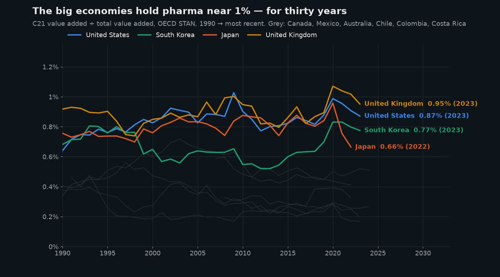
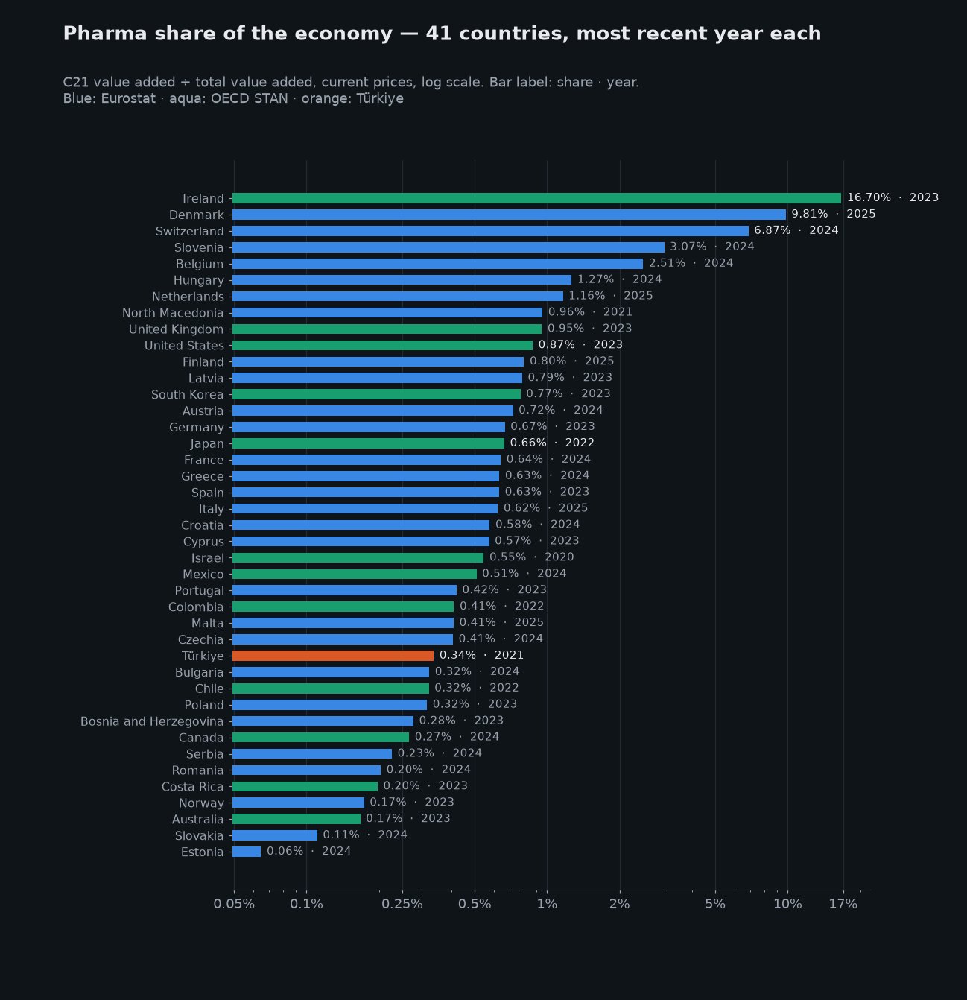
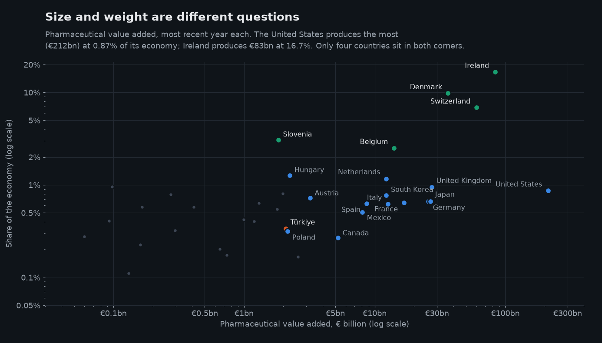
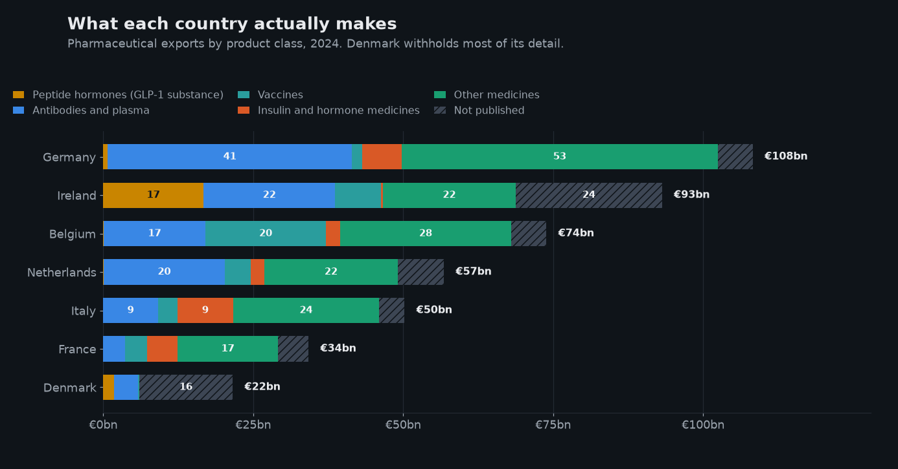
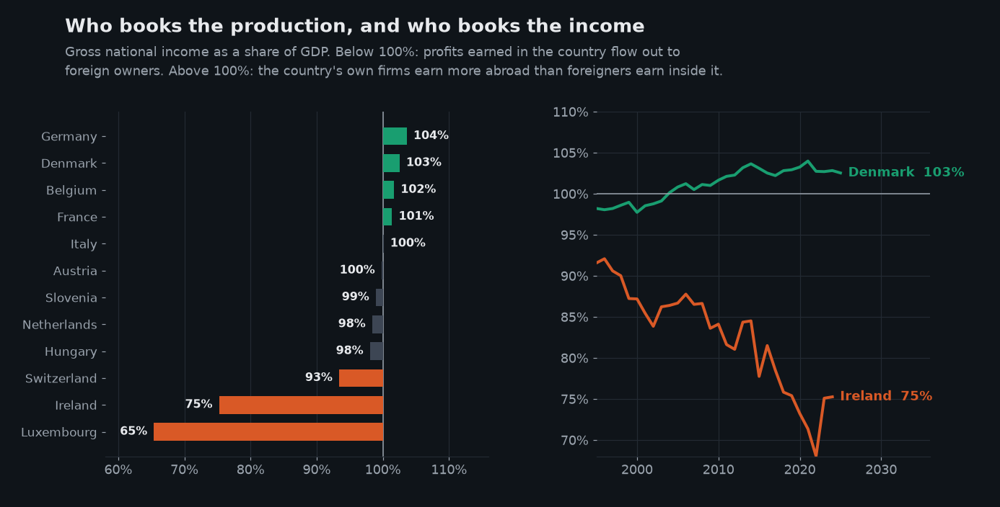

Pharma is 1% of every big economy. In Ireland it is 17%.
I pulled 35 years of national accounts and trade data for 41 countries to answer a simple question: how big is the pharmaceutical industry inside a national economy? The answer is the same almost everywhere — and the handful of exceptions turn out to be a story about risk, not success.
1. How big is pharma in an economy? — about 1%, almost everywhere
Pharmaceutical manufacturing is roughly 1% of output in every large economy, and it has been for three decades. The United States sits at 0.87%, the United Kingdom at 0.95%, Japan at 0.66%, Germany at 0.67%. The median country in the study is 0.5%.
That band held through the genomics boom, the shift to biologic drugs, and the pandemic. For a sector this visible, the stability is the surprise.

2. So why does Denmark look different? — four small countries let one industry become the economy
Four countries break the pattern: Ireland 16.7%, Denmark 9.8%, Switzerland 6.9%, Belgium 2.5%. All four are small. None of them is a bigger producer than the United States, Germany or Japan — they are simply more dependent.

Notice the United States, tenth on this list at 0.87% — while producing €212bn, more than twice Ireland. Share and size are not the same question. Plotting them together separates them:

3. What do they actually make? — vaccines, antibodies, and the ingredient behind GLP-1
Trade data names the product. At that level the leaders stop resembling each other:
- Belgium is Europe's vaccine plant — €20bn in 2024, and €43bn at the 2022 peak.
- Ireland's largest export class is the active ingredient behind GLP-1 and insulin medicines. It went from €0.5bn in 2018 to €16.7bn in 2024 — a different industry, not just a bigger one.
- Germany spreads across antibodies, blood products and small-molecule drugs, which is why no single product moves its economy.
- Denmark publishes almost none of its detail. It withholds the insulin and hormone codes entirely, and only 14% of its exports have a named destination.

Denmark's silence has the same cause as its concentration: an industry held by so few firms that publishing the detail would identify the firm.
4. Who keeps the money? — not the country that makes it
Ireland genuinely produces this: it imports almost none of what it exports. But 83% ships to the United States, and profit follows ownership, not location.
- Ireland — of every €100 earned inside the country, €75 stays. The rest, about €139bn a year, goes to foreign owners.
- Denmark — of every €100 earned at home, Danes keep €103. Their companies earn more abroad than foreigners take out.

What to take from this
- A high pharma share is exposure, not strength. Ireland's 16.7% is mostly foreign-owned output whose profits leave. Read Irish, Swiss and Luxembourg aggregates with that in mind.
- Composition can be rebuilt in a decade. Ireland and South Korea both changed what they produce rather than simply making more of it. That is a policy result, and it is visible in trade data years before it reaches GDP.
- For Türkiye: 0.34% of the economy, flat since 2003, while South Korea went from a similar base to a global biologics position. The gap is strategy, not statistics.
Appendix — all 41 countries
| # | Country | Share of economy | Pharma value added | Year | Source |
|---|---|---|---|---|---|
| 1 | Ireland | 16.70% | €83.4bn | 2023 | OECD |
| 2 | Denmark | 9.81% | €36.4bn | 2025 | Eurostat |
| 3 | Switzerland | 6.87% | €60.0bn | 2024 | Eurostat |
| 4 | Slovenia | 3.07% | €1.8bn | 2024 | Eurostat |
| 5 | Belgium | 2.51% | €14.1bn | 2024 | Eurostat |
| 6 | Hungary | 1.27% | €2.2bn | 2024 | Eurostat |
| 7 | Netherlands | 1.16% | €12.2bn | 2025 | Eurostat |
| 8 | North Macedonia | 0.96% | €0.1bn | 2021 | Eurostat |
| 9 | United Kingdom | 0.95% | €27.3bn | 2023 | OECD |
| 10 | United States | 0.87% | €212.3bn | 2023 | OECD |
| 11 | Finland | 0.80% | €2.0bn | 2025 | Eurostat |
| 12 | Latvia | 0.79% | €0.3bn | 2023 | Eurostat |
| 13 | South Korea | 0.77% | €12.3bn | 2023 | OECD |
| 14 | Austria | 0.72% | €3.2bn | 2024 | Eurostat |
| 15 | Germany | 0.67% | €25.7bn | 2023 | Eurostat |
| 16 | Japan | 0.66% | €26.7bn | 2022 | OECD |
| 17 | France | 0.64% | €16.8bn | 2024 | Eurostat |
| 18 | Greece | 0.63% | €1.3bn | 2024 | Eurostat |
| 19 | Spain | 0.63% | €8.6bn | 2023 | Eurostat |
| 20 | Italy | 0.62% | €12.6bn | 2025 | Eurostat |
| 21 | Croatia | 0.58% | €0.4bn | 2024 | Eurostat |
| 22 | Cyprus | 0.57% | €0.2bn | 2023 | Eurostat |
| 23 | Israel | 0.55% | €1.8bn | 2020 | OECD |
| 24 | Mexico | 0.51% | €8.0bn | 2024 | OECD |
| 25 | Portugal | 0.42% | €1.0bn | 2023 | Eurostat |
| 26 | Colombia | 0.41% | — | 2022 | OECD |
| 27 | Malta | 0.41% | €0.1bn | 2025 | Eurostat |
| 28 | Czechia | 0.41% | €1.2bn | 2024 | Eurostat |
| 29 | Türkiye | 0.34% | €2.1bn | 2021 | OECD |
| 30 | Bulgaria | 0.32% | €0.3bn | 2024 | Eurostat |
| 31 | Chile | 0.32% | — | 2022 | OECD |
| 32 | Poland | 0.32% | €2.2bn | 2023 | Eurostat |
| 33 | Bosnia & Herz. | 0.28% | €0.1bn | 2023 | Eurostat |
| 34 | Canada | 0.27% | €5.2bn | 2024 | OECD |
| 35 | Serbia | 0.23% | €0.2bn | 2024 | Eurostat |
| 36 | Romania | 0.20% | €0.7bn | 2024 | Eurostat |
| 37 | Costa Rica | 0.20% | — | 2023 | OECD |
| 38 | Norway | 0.17% | €0.7bn | 2023 | Eurostat |
| 39 | Australia | 0.17% | €2.6bn | 2023 | OECD |
| 40 | Slovakia | 0.11% | €0.1bn | 2024 | Eurostat |
| 41 | Estonia | 0.06% | €0.0bn | 2024 | Eurostat |
Pharmaceutical (NACE/ISIC C21) value added as a share of total value added, most recent year available per country. Shares are calculated in national currency, so no exchange rate affects them; the euro column converts value added at that year's average rate only to make sizes comparable. Rows above 2% are highlighted. Chile, Colombia and Costa Rica have no euro reference rate and so show a share but no euro figure. Iceland is excluded: its published value added turns negative from 2017.
Sources. Eurostat national accounts (nama_10_a64,
nama_10_gdp, nasa_10_nf_tr) and OECD STAN for
pharmaceutical (NACE/ISIC C21) value added, GDP and national income; Eurostat
Comext (DS-045409) for trade by product class. Data fetched 5 Aug 2026.
Every figure on this page is reproducible from the JSON files and scripts in
this repository.
Read before quoting. C21 is pharmaceutical manufacturing only — it excludes pharmacies, wholesale and R&D booked as services. Shares are calculated in national currency, so inflation and exchange rates cancel; euro figures are for size comparison only. Trade is a proxy for production, not a measure of it: export value is gross, and hubs re-export goods they never made (Slovenia is excluded for this; Ireland was tested and passes, importing almost nothing of what it exports). Product codes are chemical families, not brands: HS 2937.19 covers every peptide-hormone analogue, so read it as the GLP-1 and insulin substance class rather than one product or one company. Ireland's series comes from Eurostat to 2014 and the OECD after, and steps up in 2015 with the Irish national-accounts restatement. Denmark withholds its insulin, hormone and other-medicine codes. Iceland is excluded (negative published value added from 2017). The national-income gap is economy-wide, not pharmaceutical-specific.
Want this analysis for another sector? Get in touch.